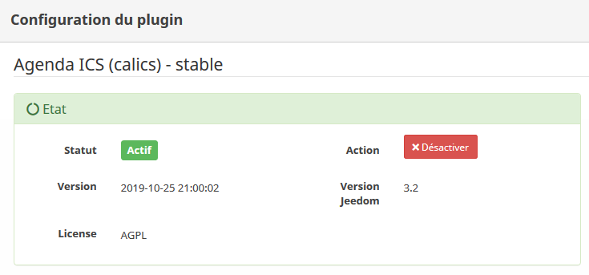
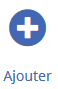
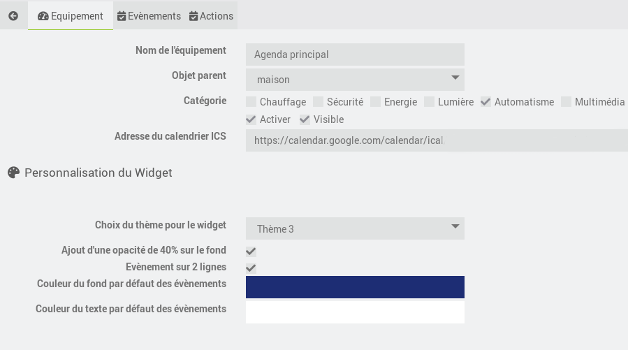
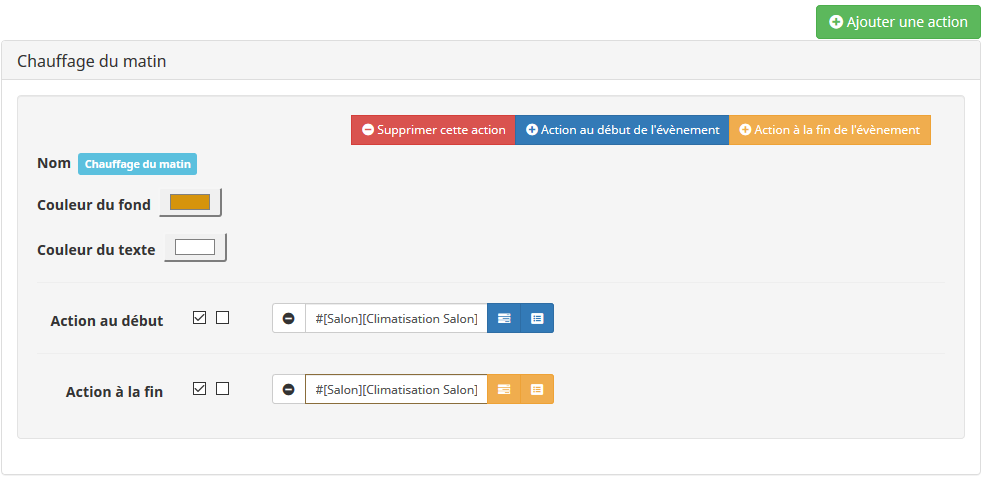
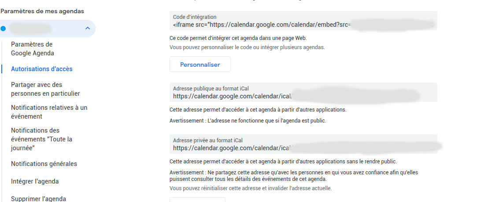

Gestion des agendas au format ICS dans Jeedom
- Compatible Google Agenda, Calendrier Outlook, Calendrier Apple, tout calendrier ICS
- Permet d'exécuter des actions en fonction des évènements
1 - Configuration du plugin Agenda ICS
Une fois l'installation du plugin terminé, vous devez l'activer.

2 - Ajouter un agenda
Le plugin se trouve dans la rubrique Plugins -> Organisation -> Agenda ICS
Cliquer sur 
3 - Paramétrages
Adresse du calendrier ICS: Adresse du fichier ICS qui sera utilisé pour récupérer les évènements ( voir 5 - Récupérer l'adresse d'un fichier ICS)
Personnalisation du Widget: Vous permet de personaliser l'apparence du widget dans le mode Design

4 - Gestion des actions sur les évènements
a - Principe
b - Ajouter/modifier/Supprimer
Cliquer sur l'onglet "Actions"

Ajouter une action: Permet d'ajouter une action liée à un évènement
Supprimer cette action: Permet de supprimer l'action
Action au début de l'évènement: Permet d'ajouter une ou plusieurs actions à exécuter au début de l'évènement
Action à la fin de l'évènement: Permet d'ajouter une ou plusieurs actions à exécuter à la fin de l'évènement
Nom: Nom de l'acton : Elle doit correspondre au titre d'un évènement dans votre Agenda
Couleur du fond: Couleur du fond de l'évènement (pour affichage dans le widget)
Couleur du texte: Couleur du texte de l'évènement (pour affichage dans le widget)
5 - Récupérer l'adresse d'un fichier ICS
a - Google Agenda
- Se rendre dans les paramètres de votre agenda
- Section "Autorisatons d'accès"
- Partie "Adresse privée au format iCal"
- Récupérer le lien https://calendar.google.com/calendar/ical/.........ics

b - Calendrier Outlook